<!doctype html>
<html lang="en">
    <head>
        <meta charset="utf-8">
        <meta name="viewport" content="width=device-width, initial-scale=1.0, maximum-scale=1.0, user-scalable=no">

        <title>State of the Art Image Segmentation with UNet</title>
        <link rel="stylesheet" href="./css/reveal.css">
        <link rel="stylesheet" href="./css/theme/moon.css" id="theme">
        <link rel="stylesheet" href="./css/highlight/zenburn.css">
        <link rel="stylesheet" href="./css/print/paper.css" type="text/css" media="print">


    </head>
    <body>

        <div class="reveal">
            <div class="slides"><section  data-markdown><script type="text/template">
## Intro

Scott Mueller

###### smueller.tampa.ai@gmail.com
</script></section><section  data-markdown><script type="text/template">## Tampa.ai

Looking for Presenters
</script></section><section  data-markdown><script type="text/template"># State of the Art Image Segmentation with UNet</script></section><section  data-markdown><script type="text/template">* What is Segmentation?
* Where is Segmentation Used?
* What is UNet?
* Challenges with UNet
* Alternatives to UNet
</script></section><section  data-markdown><script type="text/template">## What is Segmentation?</script></section><section  data-markdown><script type="text/template">## Classification

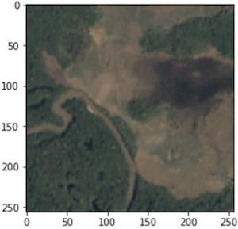
</script></section><section  data-markdown><script type="text/template">## Object Detection

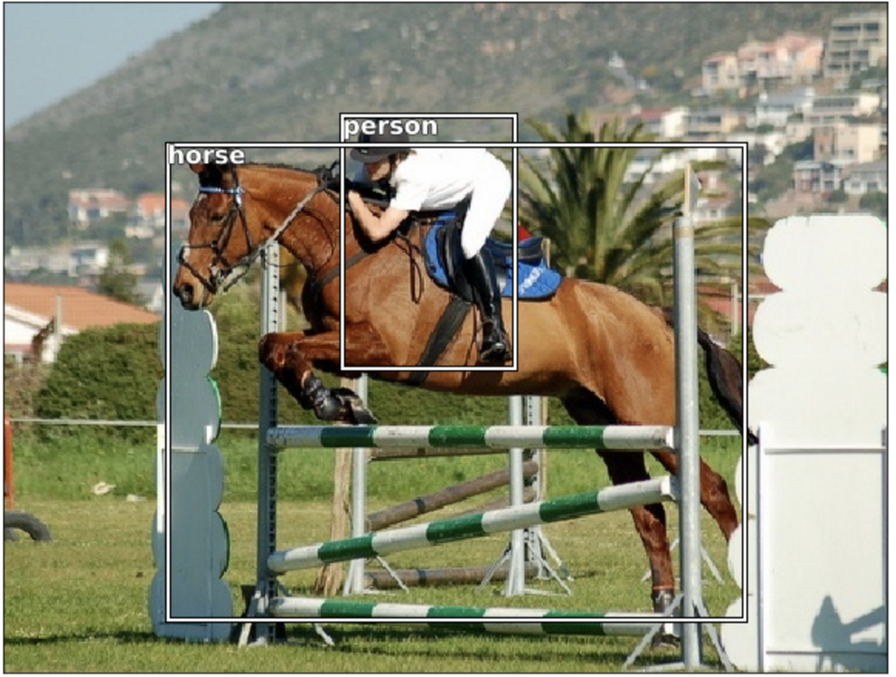
</script></section><section  data-markdown><script type="text/template">## Semantic Segmentation

[1]
</script></section><section  data-markdown><script type="text/template">## Instance Segmentation

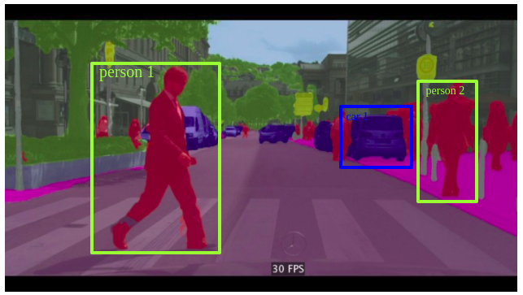[1]
</script></section><section  data-markdown><script type="text/template">## Where is Segmentation Used?</script></section><section  data-markdown><script type="text/template">## Street View


</script></section><section  data-markdown><script type="text/template">## Medical

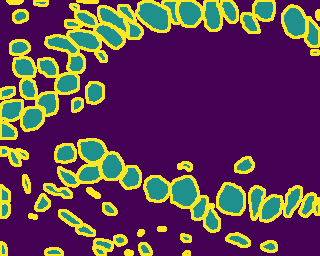[1]
</script></section><section  data-markdown><script type="text/template">## Another Medical

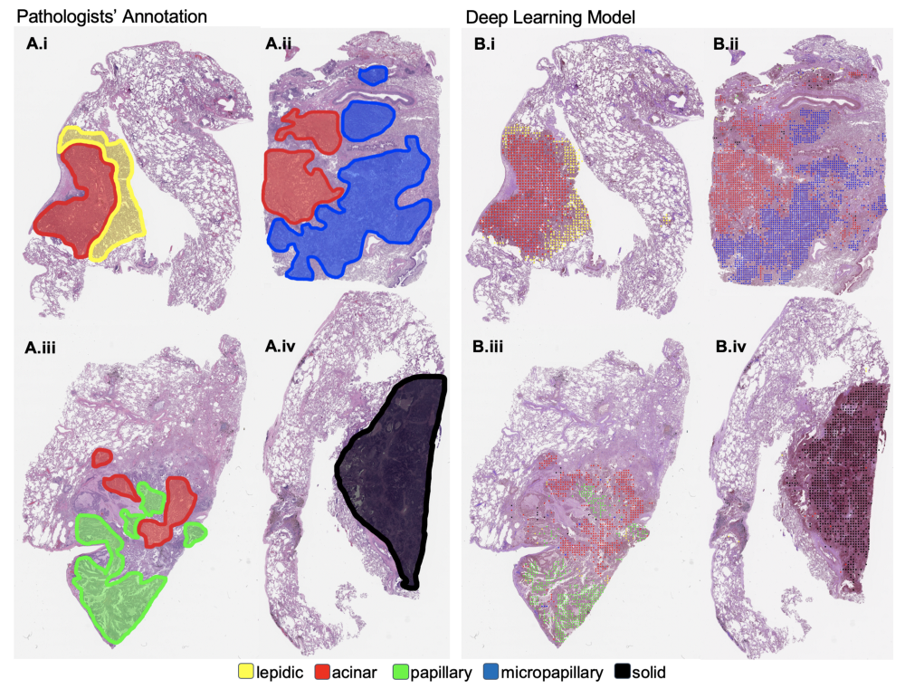[5]
</script></section><section  data-markdown><script type="text/template">## Green Screen

[3]
</script></section><section  data-markdown><script type="text/template">## Body Segmentation

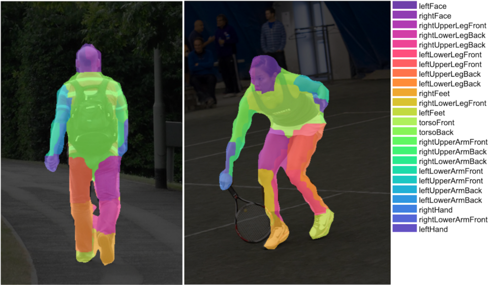[3]
</script></section><section  data-markdown><script type="text/template">## Remote Sensing

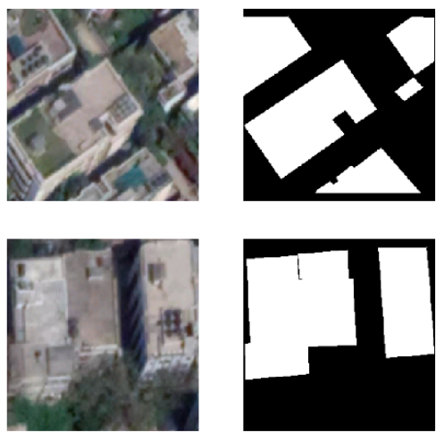[4]
</script></section><section  data-markdown><script type="text/template">## What is Unet?

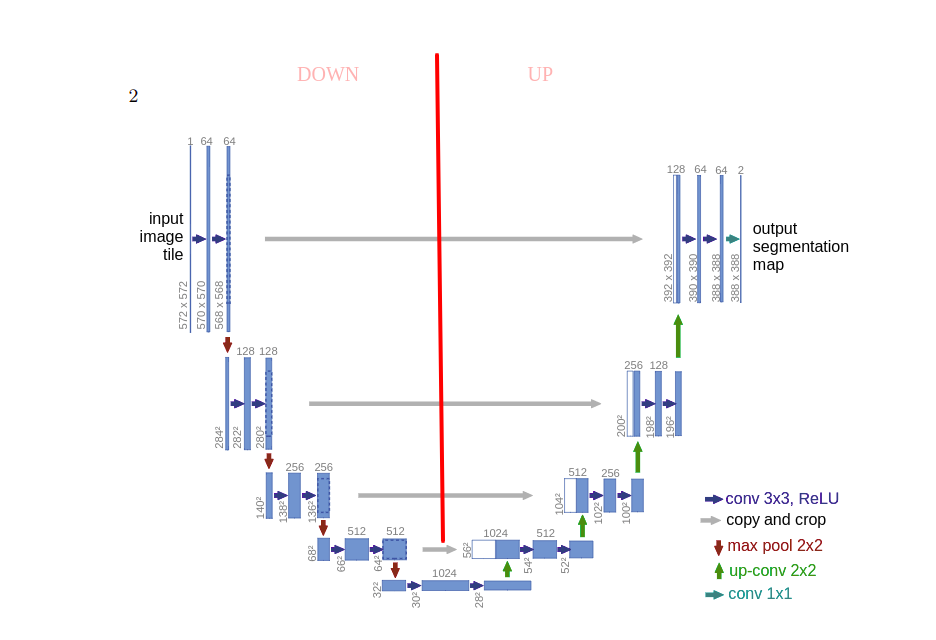[1]
</script></section><section  data-markdown><script type="text/template">## Training UNet

[CamVid with UNet Notebook](./nbs/lesson3-camvid.pdf)
</script></section><section  data-markdown><script type="text/template">
## Challenges with Unit

* Memory Usage High
</script></section><section  data-markdown><script type="text/template">
## Alternatives to Unet
</script></section><section  data-markdown><script type="text/template">## FRRN Full-Resolution Residual Networks

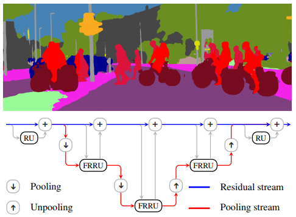[6]
</script></section><section  data-markdown><script type="text/template">## PSPNet Pyramid Scene Parsing 

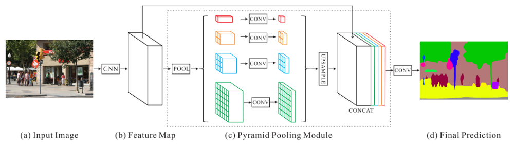[6]
</script></section><section  data-markdown><script type="text/template">## FCDenseNet 100 Layers Tiramisu 

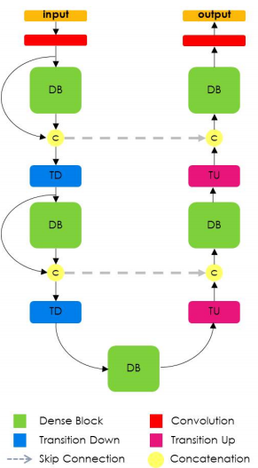[6]
</script></section><section  data-markdown><script type="text/template">## DeepLabV3

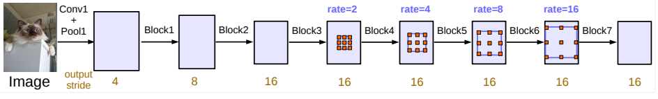[6]
</script></section><section  data-markdown><script type="text/template">Questions?</script></section><section  data-markdown><script type="text/template">## Study Group

https://ai-tampa-study-group.github.io/meetings/
</script></section><section  data-markdown><script type="text/template">### Resources
[1] https://medium.com/@keremturgutlu/semantic-segmentation-u-net-part-1-d8d6f6005066

[2] https://mc.ai/diving-into-deep-convolutional-semantic-segmentation-networks-and-deeplab_v3/

[3] https://medium.com/tensorflow/introducing-bodypix-real-time-person-segmentation-in-the-browser-with-tensorflow-js-f1948126c2a0

[4] https://towardsdatascience.com/using-image-segmentation-to-identify-rooftops-in-low-resolution-satellite-images-c791975d91cc
</script></section><section  data-markdown><script type="text/template">
### More Resources

[5] https://medium.com/health-data-science/classification-of-histopathology-images-with-deep-learning-a-practical-guide-2e3ffd6d59c5

[6] https://towardsdatascience.com/semantic-segmentation-with-deep-learning-a-guide-and-code-e52fc8958823

https://towardsdatascience.com/semantic-segmentation-of-aerial-images-using-deep-learning-90fdf4ad780
</script></section><section  data-markdown><script type="text/template">
[KnowFalls.com](https://www.KnowFalls.com/)

Looking for Founder Fastai ML Practitioners

Elixir, Functional Programming, Rails, Experience

Web presentation skills</script></section></div>
        </div>

        <script src="./lib/js/head.min.js"></script>
        <script src="./js/reveal.js"></script>

        <script>
            function extend() {
              var target = {};
              for (var i = 0; i < arguments.length; i++) {
                var source = arguments[i];
                for (var key in source) {
                  if (source.hasOwnProperty(key)) {
                    target[key] = source[key];
                  }
                }
              }
              return target;
            }

            // Optional libraries used to extend on reveal.js
            var deps = [
              { src: './lib/js/classList.js', condition: function() { return !document.body.classList; } },
              { src: './plugin/markdown/marked.js', condition: function() { return !!document.querySelector('[data-markdown]'); } },
              { src: './plugin/markdown/markdown.js', condition: function() { return !!document.querySelector('[data-markdown]'); } },
              { src: './plugin/highlight/highlight.js', async: true, callback: function() { hljs.initHighlightingOnLoad(); } },
              { src: './plugin/zoom-js/zoom.js', async: true },
              { src: './plugin/notes/notes.js', async: true },
              { src: './plugin/math/math.js', async: true }
            ];

            // default options to init reveal.js
            var defaultOptions = {
              controls: true,
              progress: true,
              history: true,
              center: true,
              transition: 'default', // none/fade/slide/convex/concave/zoom
              dependencies: deps
            };

            // options from URL query string
            var queryOptions = Reveal.getQueryHash() || {};

            var options = {"transition":"fade"};
            options = extend(defaultOptions, options, queryOptions);
        </script>


        <script>
          Reveal.initialize(options);
        </script>
    </body>
</html>
